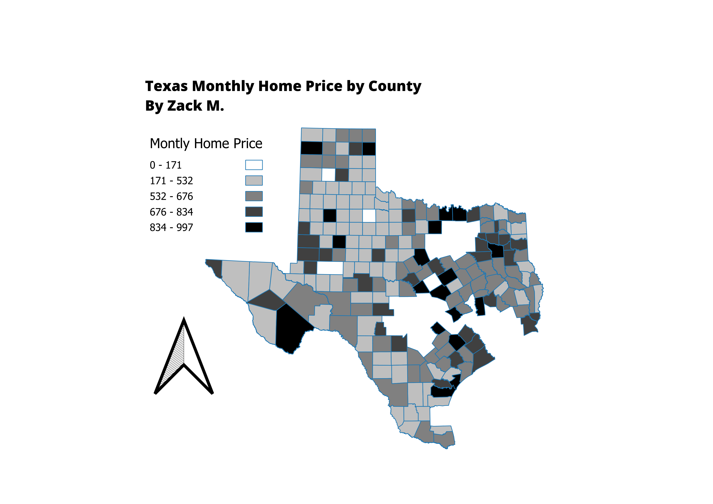

Homework 7
Zack M.
These maps represent the ratio of Monthly Home Costs. I took the yearly average home price I found through the National Assoication of Realtors
and divided by 12 to get these values. I chose this as many family members I have in Texas, particularly San Antonio have described raising
home prices, so I wanted to see what it looked like. Some counties didn't have values. This map is in the Texas State Projection.

Link to shapefile
CSV dataset
https://www.nar.realtor/research-and-statistics/housing-statistics/county-median-home-prices-and-monthly-mortgage-payment